A cafe visual novel about finding your way in the workplace as a neurodivergent person.
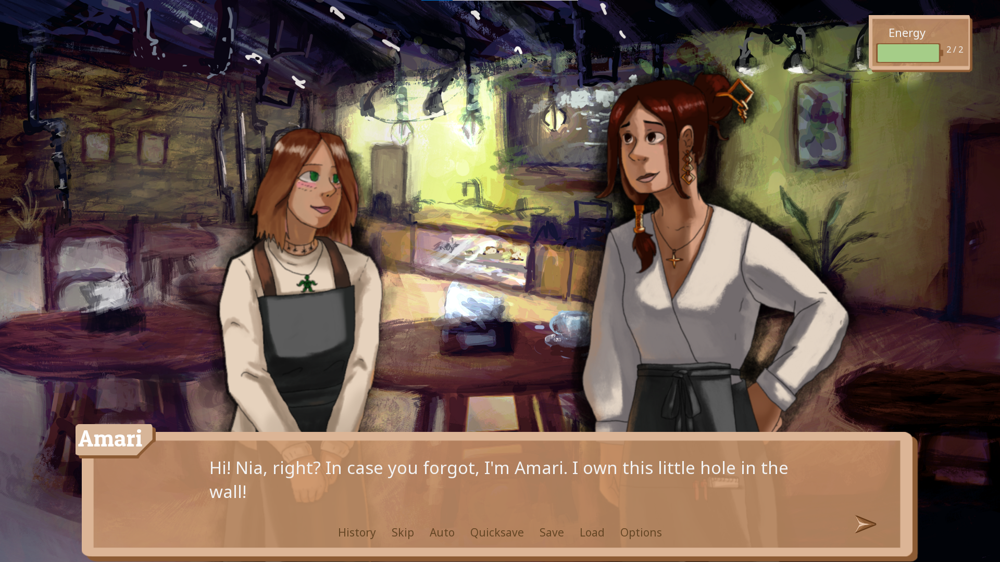
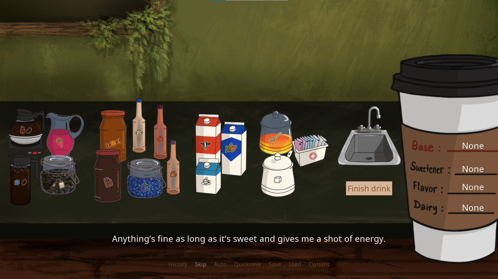
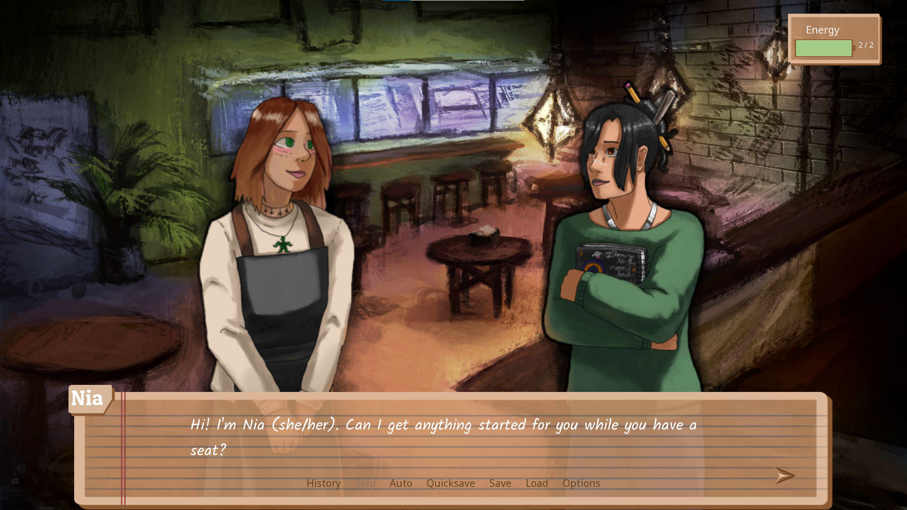
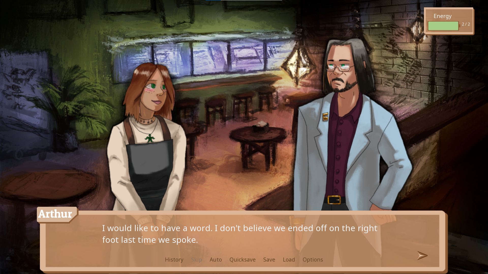
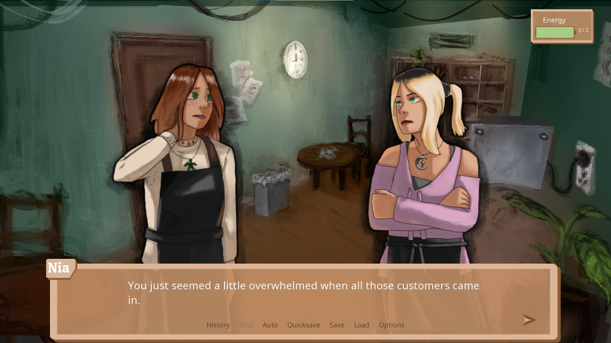
About:
During their senior year, WPI undergraduate students are expected to complete a Major Qualifying Project. This final degree requirement is an intensive, long-term team project; ours was completed over the school year.
Neurotype Cafe is a visual novel that follows Nia, a neurodivergent barista, as she handles her first week at a new cafe job. Players develop relationships with characters, prepare drinks, and manage their social energy in a thoughtful story about self-accceptance, expectations, and perfectionism. Also completed alongside the game itself were presentations of our work and a lengthy report detailing the project's goals and completion process.
Neurotype Cafe won a WPI Provost's Award! One project is picked by faculty each year to recognize the best senior project!
Development details:
Developed: August 2022 – May 2023
Development time: ~28 weeks
Languages: Python
Tools: Ren'Py engine, Visual Studio Code, GitHub, Gimp, Google Workspace
Team:
Lena Dias (myself) — programmer, designer, writer, manager
Harmoni Larrabee — programmer, writer, manager
Mitch Tanguay — lead writer
Jaliah Hippolyte — concept artist
Allison Lee — background artist
Kerri Thornton — UI artist
Kate Valery — character artist
Rose Bohrer — advisor
Ben Schneider — advisor
My role:
Programmer
Found ways to work around limits of a game engine built for a very specific purpose
Scripted dialogue, character appearances, text effects, sound, and portrait movement throughout the game
Programmed the drink preparation minigame
Programmed menu features such as audio subtitles, developer comments
Programmed credits sequence
Managed version control, resolved Git conflicts
Organized file structure
Designer
Clarified experience goals and ensured all parts of the game reinforced core themes
Considered the game as a cohesive, thoughtful piece of art when designing
Constantly reflected on the game's messaging! Lots and lots of late night design thoughts
Designed UI
Chose mechanics that would be feasible, deep, and could be pared back if necessary
Decided on various "juice" effects to improve user experience such as screen shake, sound feedback, tooltips, etc.
Created multiple vertical slices of the game for asynchronous and sychronous playtesting demos
Created survey materials for gathering feedback on intuitivity, usability, stability
Reassessed design according to playtesting feedback
Manager
Carefully managed project scope
Onboarded and met weekly with a team of multiple artists with different schedules and priorities, readjusting and clarifying goals throughout process
Managed and closely
Developed weekly plans, term plans, and year plans
Kept meeting notes, team agendas, and centralized team resources
Attended and guided discussion in meetings/group chats between team members, advisors, incorporating team's thoughts on the project
Created asset charts, dependency charts to help team members meet goals
Writer
Helped plan out story beats and character goals for each interaction in team discussion and "beat sheet"
Wrote branching conversations between characters for around 1/4 of the game
Edited game script
Ensured consistency of character personalities and speech
Developed character arcs throughout the game
Ensured respectful portrayals of cultures and identities
Miscellaneous responsibilities
Designed audio, recorded Foley sound effects, and located music
Wrote project report
Drew title screen pixel art
Created survey materials for gathering feedback on intuitivity, usability, stability
Reassessed design according to playtesting feedback
Planned for and was interviewed at multiple presentation sessions
Met requirements for a multi-major project
So many little polish things I'm probably forgetting!
My thoughts:
Oh gosh, there's a lot to say about this one; I included a whole note in the game itself because I wanted to express my passion for it and thoughts on it. This was a joy to work on; great team, wonderful advisors, lovely concept. I, of course, have my many problems with it that I wish I could've ironed out; it was my baby for a bit, and finding time to work on it throughout the year was a struggle. But I'm glad I did. Honestly, it's got a lot going for it: unique mechanics, thoughtful interactions, a lot of love and care, and a pretty impressive runtime for a student project. It was proof to me I could make good things and bring passion to my work. There are even plans to continue supporting it and adding story and polish to a story I cared a lot about. And oh my gosh, it won the Provost's Award! That was a wonderful surprise.
Links:
Download the game on itch.io
Read the complete project report here
Download the complete project report here
 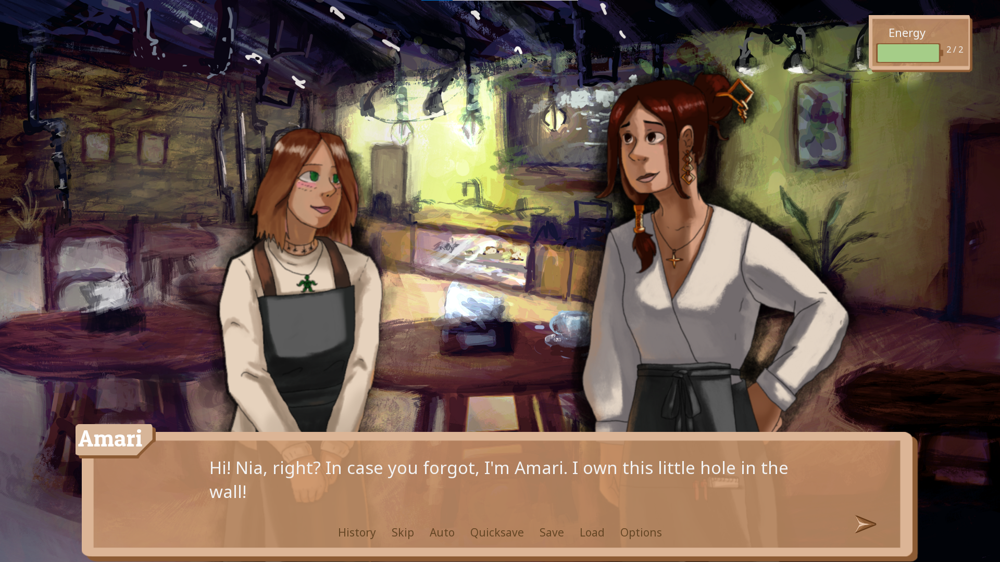
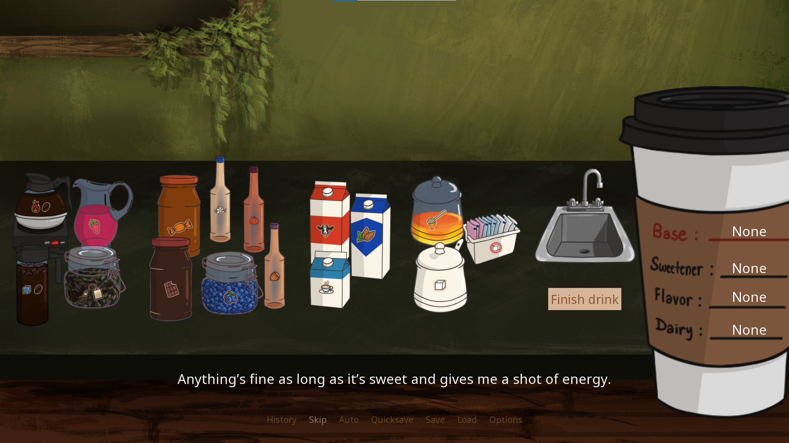
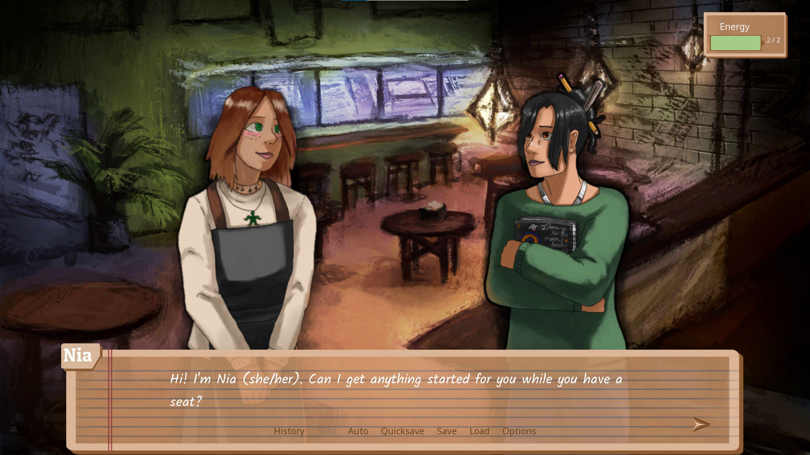
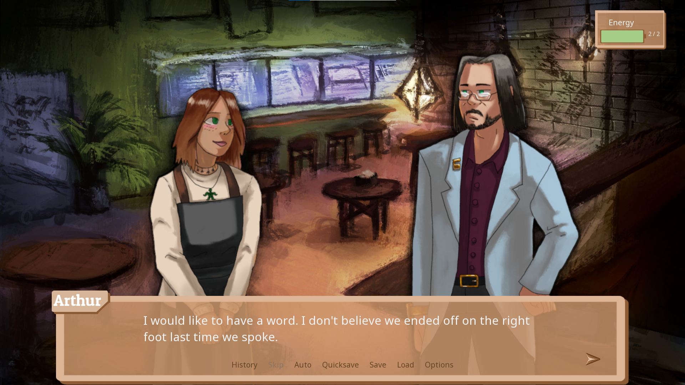
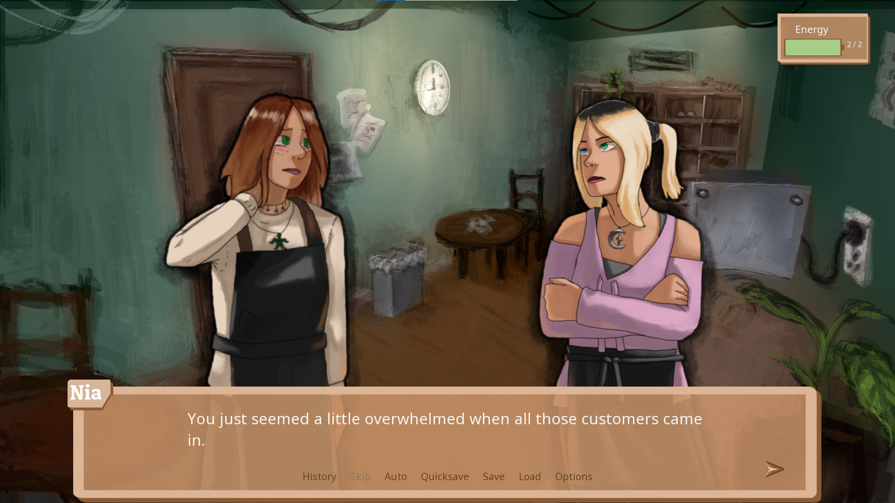
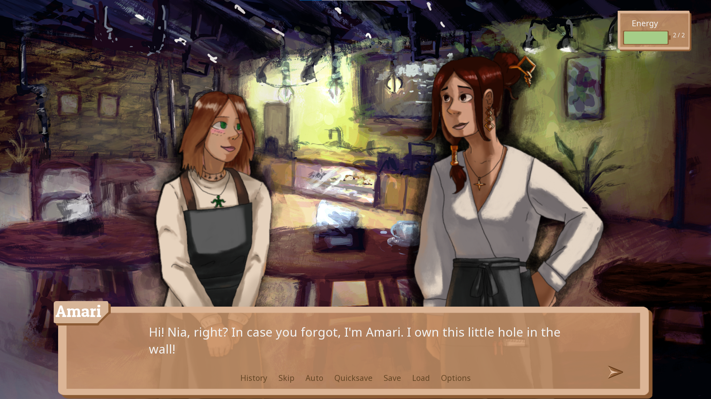
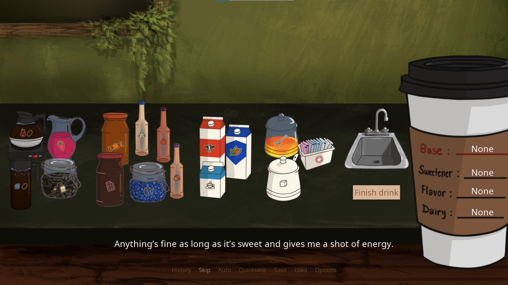
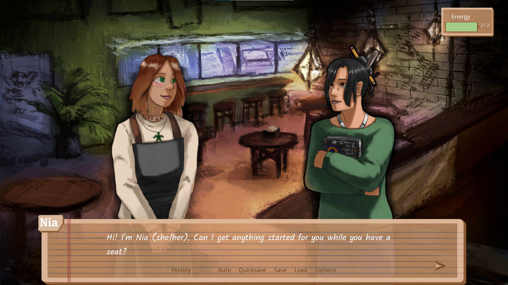
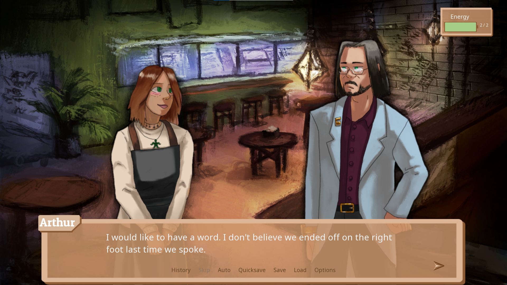
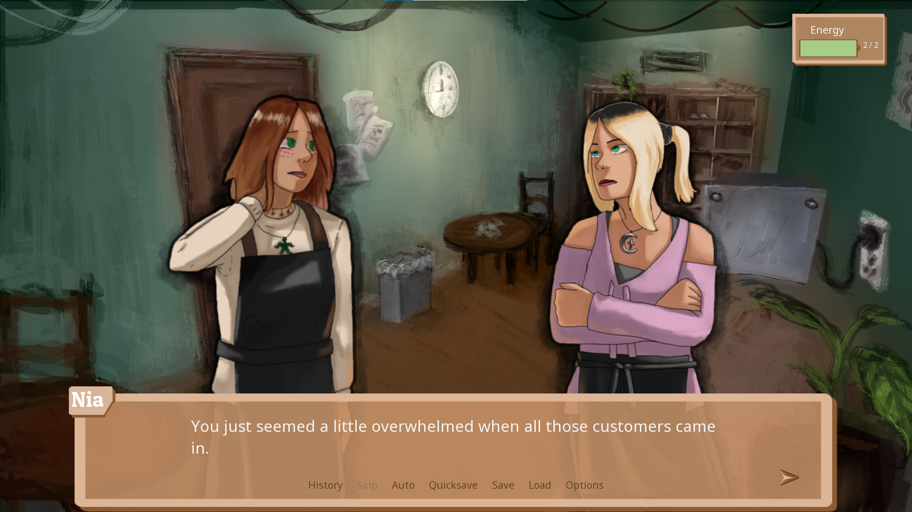